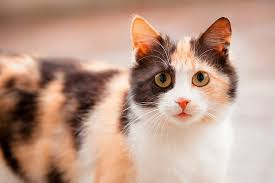

Despre mine
Numele meu este Rotariu Alexandru-Cristian si imi plac pisicile

Fun fact : Majoritatea pisicilor care au 3 culori total difirete cum are si pisica de mai sus sunt femele
Numele meu este Rotariu Alexandru-Cristian si imi plac pisicile

Fun fact : Majoritatea pisicilor care au 3 culori total difirete cum are si pisica de mai sus sunt femele